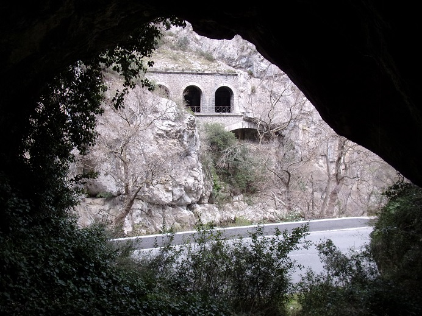
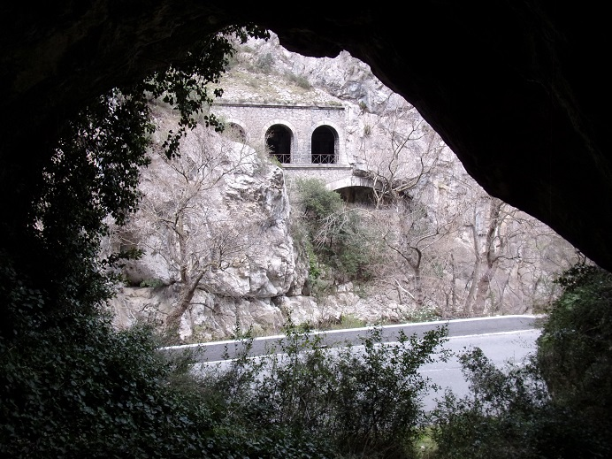
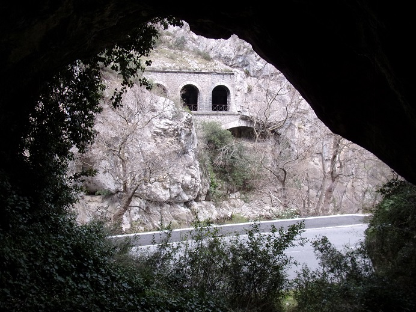
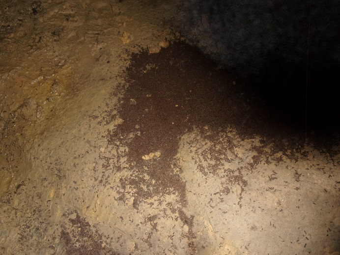

Bien sûr cette grotte était à St Martin entourée de bien des mystères... Selon ma grand-mère elle était si profonde et avec des passages si étroits qu'arrivé à un certain point il n'y avait plus assez d'oxygène pour continuer. Bien faire attention d'avoir une bougie allumée pour s'assurer de pouvoir progresser sinon au risque de s'écrouler étouffé. Évidemment personne n'en avait jamais vu le fond...
Vraisemblablement le club de spéléologie de Quillan, lui, en a déjà fait le tour et elle ne doit pas dépasser les 200 m car n'est pas référencée dans les grandes grottes de l'Aude (contrairement à la grotte de la Muraille du Diable de l'autre coté de l'Aude)..., mais personnellement je n'y étais rentré qu'une fois il y a plus de 40 ans.
Avec Carole et mon plus jeune frère on s'était monté la tête pour y aller. Je n'étais sûrement pas le plus chaud, mais habiter à 2 kilomètres d'un tel lieu et ne jamais l'avoir exploré... n'était pas digne de nous. Et nous voilà partis à pied, armés de nos torches toutes neuves pour enfin pénétrer dans l'antre mystérieuse et quelque peu inquiétante. De fait, nous avons dû faire 10 mètres à l'intérieur avant de s'enfuir en courant, s'en s'arrêter jusqu'à la maison. En effet, dès quasiment l'entrée nous avons été assaillis par une nuée de chauve-souris. Très vite après l'entrée la cavité monte et rétrécie, je sentais mes coéquipiers de plus en plus effrayés me solliciter pour faire demi-tour. Mais on n'avait pas fait tout ce chemin pour s'arrêter pour si peu. A force d'être frôlé par des bestioles dérangées par notre expédition, j'ai fini par donner le go de la retraite. Mais à la maison, les 2 autres de dire, morts de rire, qu'eux n'avaient jamais eu peur et que ce n'est que pour me faire plaisir qu'ils avaient accepté, à contre cœur, de s'en revenir...
Ma deuxième tentative, celle d'aujourd'hui 24 mars 2022, m'a permis d'atteindre le fond à environ 150 mètres de l'entrée.
Cette fois, pas de coéquipier pour me décourager d'aller au bout et...
Pas de chauve-souris non plus...
Cette grotte est très fréquentée au vu de la quantité d'empreintes de pied rencontrée et cela malgré le panneau indicatif placé, il y a très longtemps, par la mairie de Quirbajou, piétiné (après être tombé) par les spéléologues amateurs

la cavité monte sur toute sa longueur entre 20 % et jusqu'à 35% à la fin. Pas de concrétion (bizarre car la petite grotte du Gal qui n'est qu'à un kilomètre en était pleine avant d'être saccagée et le tunnel du Rébuzo qui n'a que 120 ans en compte de nombreuses).
La voûte, au départ, semble composés d'énormes bloc de pierres tenant ensemble avec des fissures les délimitant, puis plus loin elle semble s'être écoulée en plusieurs endroits


Les seules traces de chauve-souris que j'ai aperçues aujourd'hui sont leurs déjections...
La photo suivante est particulièrement "brillante", mais bizarrement je n'ai pas souvenir d'avoir vu ces couleurs... sûrement le flash...

Plus on s'enfonce dans la cavité plus elle devient humide et glissante avec un sol couvert de glaise.
Au bout, une paroi composée de matériaux friables glaiso-sableux ferme le passage : quelques coups de pèles permettraient vraisemblablement de continuer, si derrière il n'y avait pas le risque de se trouver avec une poche d'eau qui pourrait nous emporter - ou un rocher qui lui ne serait pas friable...

Je suis sorti, couvert de boue, extrêmement fatigué d'une façon difficilement justifiable de par la brièveté de la visite.